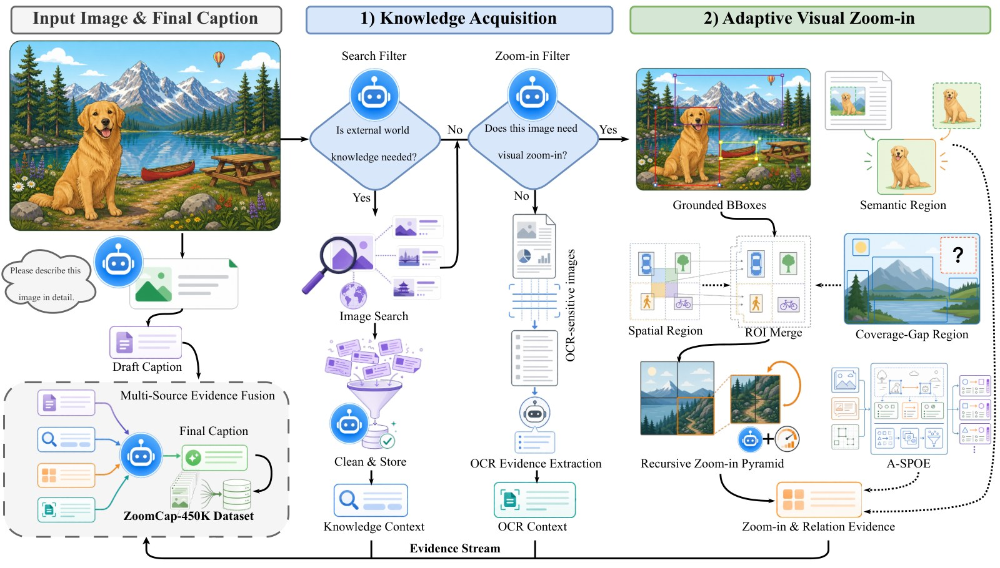
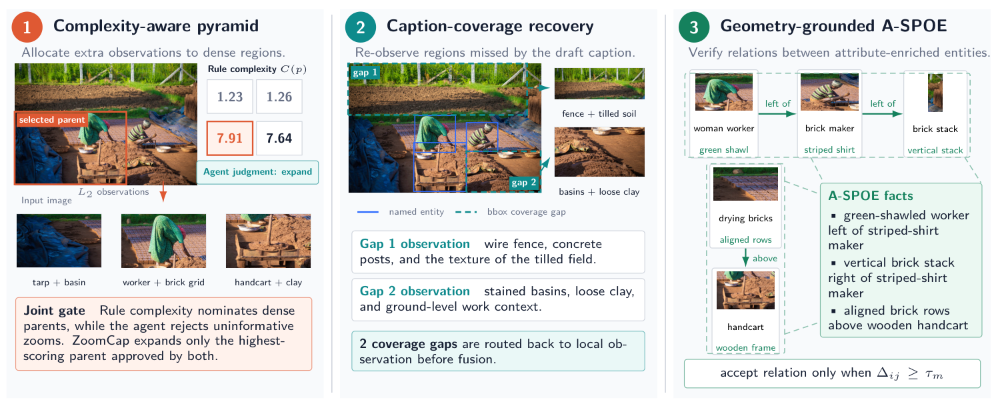
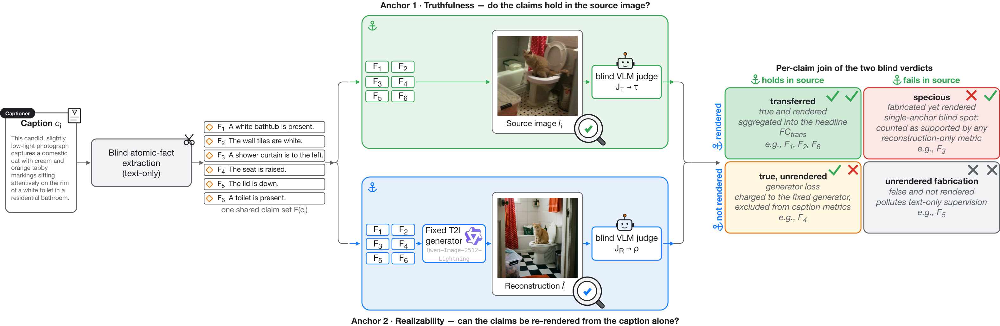
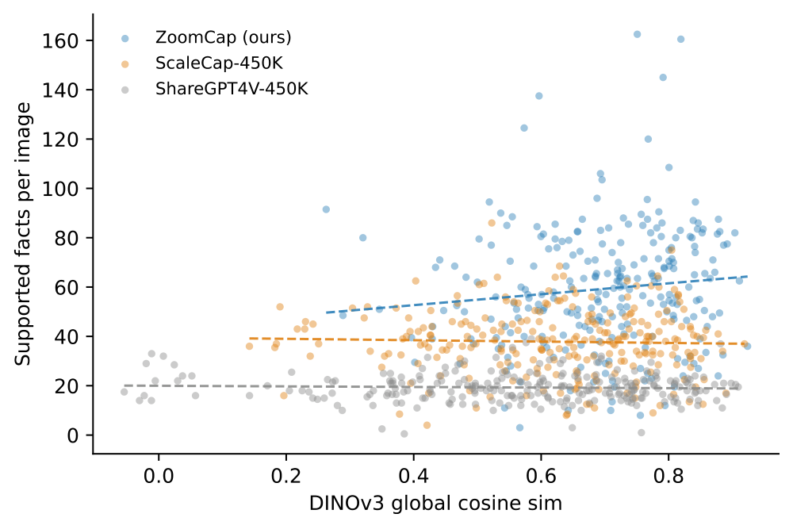
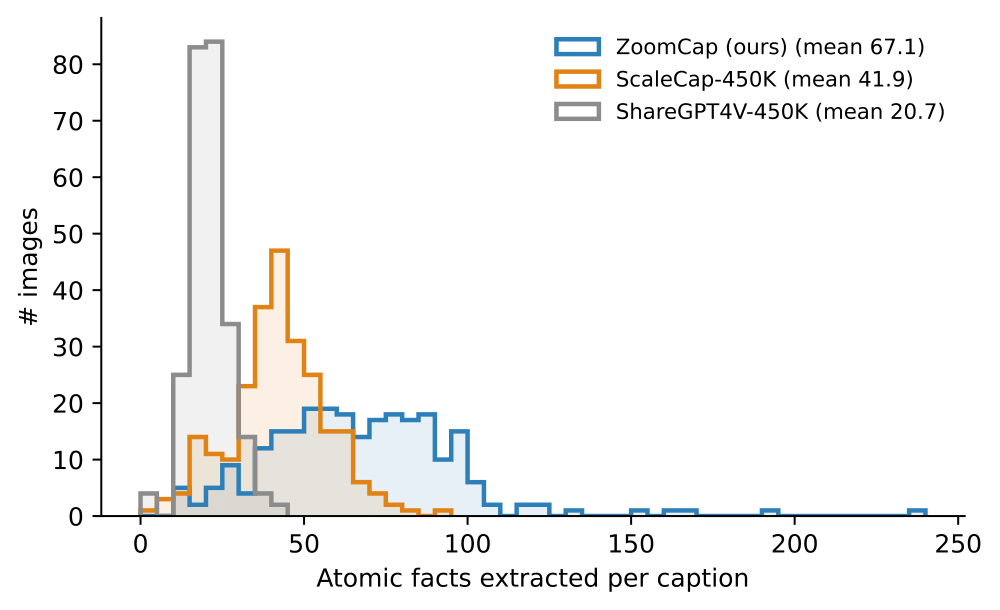
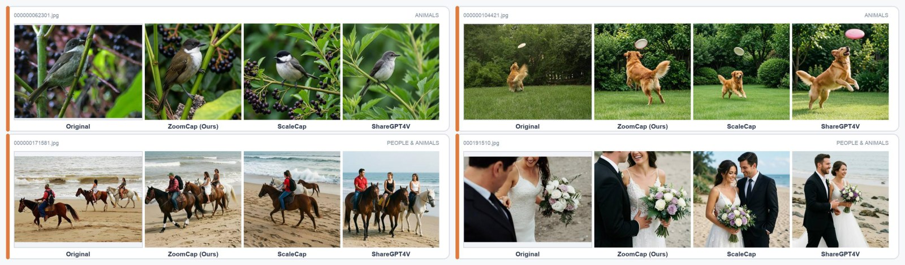
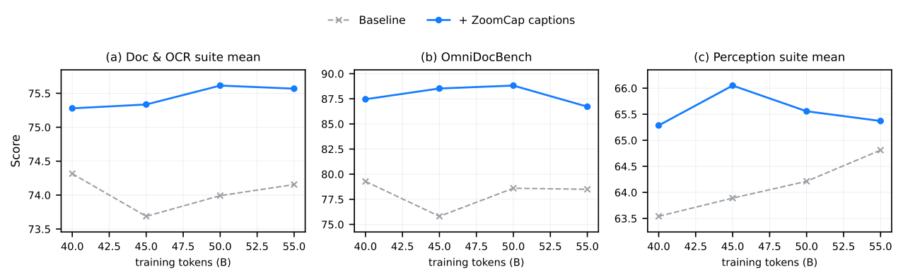
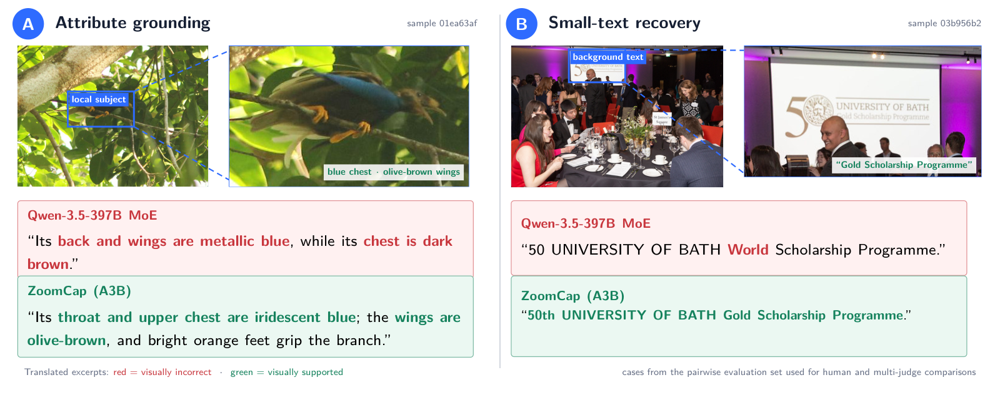
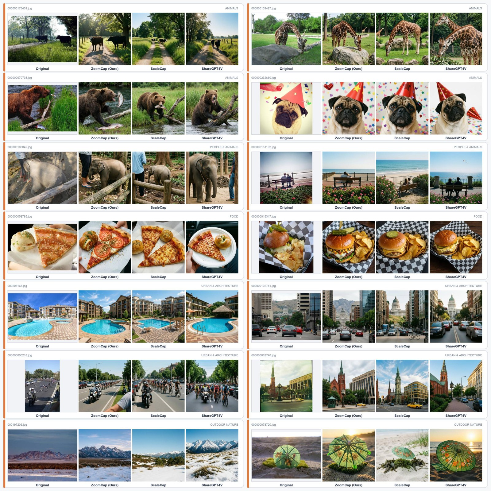

1Ant Group 2Zhejiang University ∗equal contribution †team leader



| Caption source | #Facts/img ↑ | τ truthfulness % ↑ | transferred % ↑ | specious % ↓ | unrendered fab. % ↓ | FCtrans ↑ | DINO ↑ |
|---|---|---|---|---|---|---|---|
| ShareGPT4V-450K | 20.7 | 81.4 | 80.3 | 16.6 | 2.0 | 14.8 | 0.566 |
| ScaleCap-450K | 41.9 | 88.9 | 88.2 | 7.4 | 2.6 | 31.5 | 0.620 |
| ZoomCap-450K (ours) | 67.1 | 93.8 | 90.9 | 3.4 | 1.7 | 52.4 | 0.696 |



| Backbone | Vanilla | ShareGPT4V-450K | DenseFusion-450K | ScaleCap-450K | ZoomCap-450K |
|---|---|---|---|---|---|
| Qwen2.5-7B + Qwen2.5-ViT | 59.16 | 59.46 | 60.44 | 60.48 | 62.70 |
| Qwen2.5-3B + Qwen2.5-ViT | 54.84 | 56.90 | 58.42 | 58.22 | 60.80 |
| Ling-mini-base-2.0 + Qwen2.5-ViT | 55.49 | 57.72 | 58.90 | 58.03 | 60.21 |
Same checkpoint, recipe, seed and token budget — only the caption corpus changes. Benchmarks: InfoVQA, DocVQA, ChartQA, MMStar, MathVista, LLaVABench, MMVet, MMB, MMMU, SEED, AI2D.

| Suite / benchmark | Baseline | + ZoomCap captions |
|---|---|---|
| Doc & OCR suite mean (9) | 74.0 | 75.4 (+1.4) |
| OmniDocBench | 78.0 | 87.9 (+9.8) |
| OCRBenchV2-b | 46.2 | 48.5 (+2.2) |
| Perception suite mean (9) | 64.1 | 65.6 (+1.5) |
| MMVet | 49.9 | 61.7 (+11.8) |
In the medical study, 2.64M ZoomCap-captioned images improve five medical VQA benchmarks by +3.04 on average, vs +1.76 for same-image single-pass Gemini-3.1-Pro captions, and turn VQA-RAD from a small regression into +3.1.

| Engine | Teacher | Calls/img | $/img | Wall-clock | $ / transferred claim |
|---|---|---|---|---|---|
| Single-pass flagship | Qwen3.5-397B-A17B | 1 | 0.0067 | ~17 s | — |
| ScaleCap-450K recipe | Qwen3.5-35B-A3B | ~70 | 0.0274 | ~123 s | 8.7×10-4 |
| ZoomCap (ours) | Qwen3.5-35B-A3B | ~9 | 0.0077 | ~29 s | 1.5×10-4 |
Captions only — no images are redistributed. Every row carries the upstream image key, in a schema identical to ScaleCap-450k, so it drops into a ScaleCap training recipe unchanged. Licence: CC BY-NC 4.0, research use only.
from datasets import load_dataset
ds = load_dataset("MasterHow/ZoomCap-450K", "pii_free", split="train") # 447,285 rows
print(ds[0]["images"], ds[0]["conversations"][1]["value"][:120])
# ['laion_filter_image/7156c3a9…8b910b.jpg'] This dynamic, close-up action shot …| config | rows | unique image keys | mean caption chars | rule |
|---|---|---|---|---|
pii_free (public) | 447,285 | 432,755 | 3,966.0 | degenerate rows and rows with in-image third-party contact strings dropped |
clean | 451,276 | 436,642 | 3,963.3 | full minus 3,687 degenerate outputs |
full | 454,963 | 440,238 | 4,228.6 | the paper’s corpus, verbatim (approval required) |
pii_free config contains none of them (independently re-scanned, 0
hits). The full/clean configs reproduce the paper’s statistics exactly and require a separate
data-release approval.Provenance & licence chain, PII census, leak scan and verification reports: dataset card · verification reports · tooling (Apache-2.0).

@article{shi2026zoomcap,
title = {ZoomCap: Evidence-Routed Visual Zooming for Recoverable
Visual Information Transfer},
author = {Shi, Hao and Wang, Jiafeng and Fu, Yuzhuo and Zhang, Tao and
Bai, Jian and Zhang, Juelu and Cui, Qing and Huang, Chao},
journal = {arXiv preprint arXiv:2610.21320},
year = {2026}
}The image pool comes from ScaleCap-450k (Xing et al., 2025), itself built on ShareGPT4V and LAION-5B. Obtaining images remains the user’s responsibility under those upstream terms; this corpus is released under the same CC BY-NC 4.0 licence so no user gains rights beyond what the upstream corpus grants. Captions are model-generated and may contain hallucinated detail; not for medical, legal, diagnostic, identification or surveillance use.